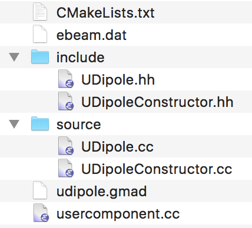
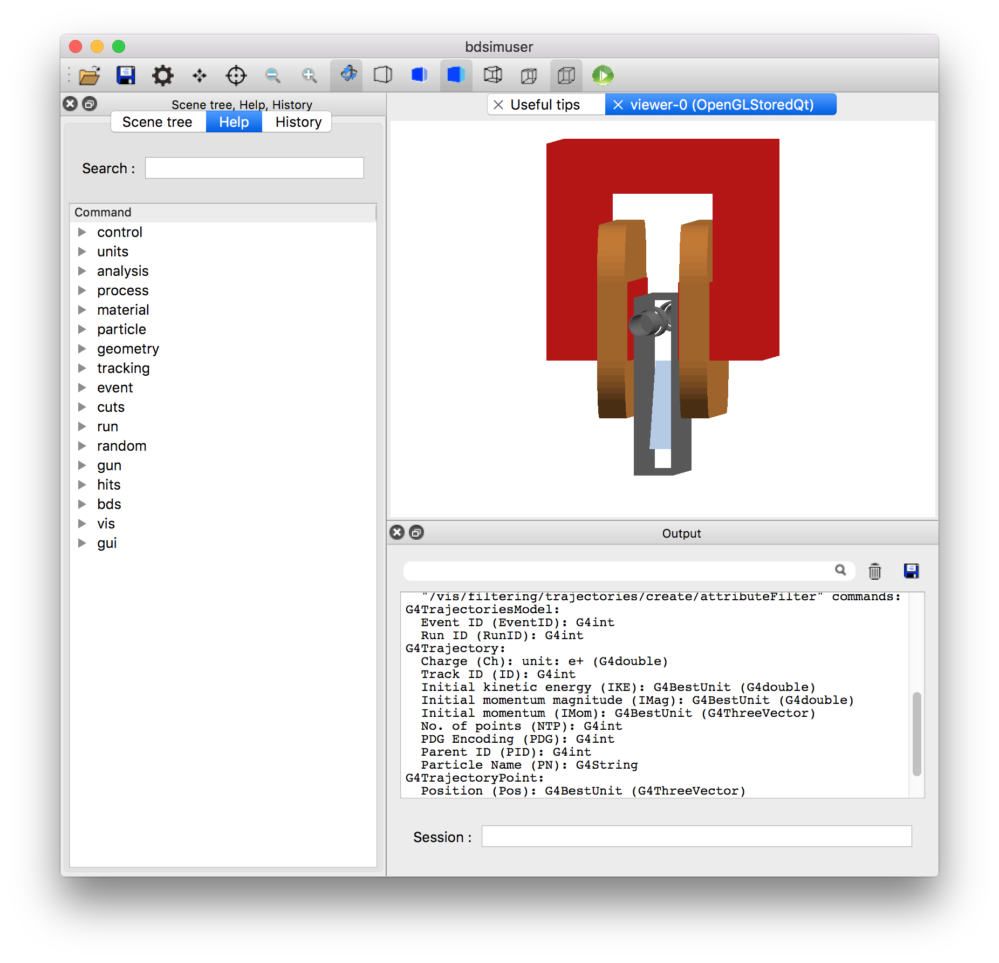

Interfacing
As BDSIM is completely open source, it is possible to extend BDSIM or interface it with other software. This ability is driven by the needs of users, so we strongly encourage users or would-be developers to get in touch with the developers (see Support). We welcome extensions and contributions to BDSIM.
Below are details of various methods to extend BDSIM.
Compiling Against BDSIM
BDSIM includes CMake files in the installation so that another CMake application can use the BDSIM classes and libraries. CMake is a system to automatically create Make files for different operating systems and different computer systems with libraries in various locations. CMake is used as the build system for BDSIM, but also for Geant4, ROOT and CLHEP and is a common C++ software paradigm. Below is the most minimal CMakeLists.txt to create a C++ application using BDSIM.:
cmake_minimum_required (VERSION 3.2)
project (externalcpp)
# point cmake to my own custom installation directory that's not a system dir
# this is where BDSIMConfig.cmake exists
set(CMAKE_PREFIX_PATH /Users/nevay/physics/reps/bdsim-develop-install/lib/cmake/bdsim)
# find the package and set up variables
find_package(BDSIM REQUIRED)
# define program includes
include_directories(${BDSIM_INCLUDE_DIR})
# make a program and link to gmad (parser) and bdsim libraries
add_executable(customprogram customprogram.cc)
target_link_libraries(customprogram ${BDSIM_LIBRARIES})
Along with this is a single C++ file called customprogram.cc. Below are the contents of this:
#include "BDSIMClass.hh"
#include <iostream>
int main(int argc, char** argv)
{
BDSIM* bds = new BDSIM(argc, argv);
if (!bds->Initialised())
{std::cout << "Intialisation failed" << std::endl; return 1;}
std::cout << "Custom stuff here" << std::endl;
bds->BeamOn();
delete bds;
return 0;
}
This example is provided in bdsim/examples/features/interfaces/externalcpp. The user
should edit the CMakeLists.txt so that CMAKE_PREFIX_PATH points to their BDSIM
installation directory if not in a system directory to allow CMake to find that installation.
Custom Beam Line Component
Warning
If there are any geometrical overlaps (broken hierarchy, touching solids, overlapping separate solids at the same level of hierarchy), the Geant4 tracking may be wrong and the results cannot be trusted. This may lead to slow running models, inaccurate results, excessive navigation warnings, or worst of all: no warnings but inaccurate results. When developing custom geometry, the developer must ensure no geometrical overlaps are present before the model is used for a physics study.
Whilst BDSIM provides the most common accelerator beam line components, we cannot foresee custom components that various accelerators may have. To insert a custom component, we would recommend using a geometry package such as pyg4ometry to prepare GDML geometry and using a generic beam line element. See Geometry Preparation and the generic beam line element object, element. A field map can also be overlaid on this.
However, if the user is familiar with Geant4 C++, Geant4 geometry or requires a more detailed interaction with the simulation, it is possible to add a custom C++ beam line component to BDSIM. The user must define:
A class that constructs the beam line component and that inherits BDSAcceleratorComponent.
A factory class that constructs an instance of the component. This should inherit BDSComponentConstructor and translates information provided by BDSIM from the parsing of the input text files.
A C++ main program that uses BDSIM and will be executed like BDSIM.
A CMake file to compile the application sources.
A complete example is provided in bdsim/examples/features/interfaces/usercomponent that
is described here. The contents of the directory are shown below.
{kind=link}

This example builds a custom vertical dipole spectrometer. This makes use of the magnet geometry and beam pipe factories to build a magnet with custom proportions and an offset beam pipe with a screen inside it.
{kind=link}

File |
Description |
|---|---|
CMakeLists.txt |
Defines how to compile program. |
ebeam.dat |
Example beam distribution file. |
include/UDipole.hh |
Header for component. |
include/UDipoleConstructor.hh |
Header for constructor. |
source/UDipole.cc |
Source for component. |
source/UDipoleConstructor.cc |
Source for constructor. |
udipole.gmad |
Example GMAD input for BDSIM passing user information through parser to custom user component. |
usercomponent.cc |
C++ main that registers custom component and constructor with BDSIM kernel. |
Input GMAD
The key part in the input GMAD is to define a usercomponent beam line element. This takes
and argument userTypeName to define the type of the element if more than one user
component is registered. This beam line element can now be used normally in any line
in BDSIM. To convey parameters to the new user-defined element, any parameter available
for any other element may be used. These are defined in parser/element.hh. Additional
parameters may be supplied via the element member string “userParameters”. This should
be a string with space delimited parameter value sets where each parameter and value are
separated by a colon. For example:
userParameters="variable1:0.4 variable2:bananas"
The utility function BDS::GetUserParametersMap from
#include "BDSUtilities.hh" will split
this up into a map of strings to strings such as:
Map Key |
Value |
|---|---|
“variable1” |
“0.4” |
“variable2” |
“bananas” |
The variables are left as strings and it is up to the developer to know which variables to convert to numbers if required. The map can also be searched if some variables are optional. The usercomponent example shows this for passing the colour into the new element.
Component Class
The component class in this example is called “UDipole”. The user component can have any constructor it likes, but it must inherit BDSAcceleratorComponent and provide a name, length, angle it bends the beam line by and a string saying the name of the component. This information is used to construct the beam line and is passed to the output.
Note
The “length” is the arc length if there is a finite angle. If there is a finite angle, this is assumed to bend the beam line continuously throughout the component. e.g. no ‘S’ shaped component. The coordinate system is right-handed and a positive angle causes deflection to negative x coordinate while propagating in the direction z.
BDSIM makes extensive use of the concept of factories. These are bits of code that take a recipe class - a small class or struct with some simple parameters - and builds an object. The factory retains no ownership of the object and forgets about it. We use this pattern to create beam pipes and magnets for example and these can be placed inside each other or along side each other safely.
Each object inherits BDSGeometryComponent and this deals with the memory management (ownership) of objects and the extent of the object.
Component Constructor
This is a class the user must implement that inherits BDSComponentConstructor. The user must implement a method called Construct that has pointers to the beam line element from the parser (GMAD::Element) as well as the ones before and after it. It should also make sure to change into Geant4 units from the parser’s SI units.
Class Documentation
BDSIM uses Doxygen for class documentation. This is a series of comments in C++ with
extra comment characters that are built into a documentation system. Please look through
the Doxygen website for BDSIM http://www.pp.rhul.ac.uk/bdsim/doxygen or the headers
of the source code in bdsim/include/*.hh.
Custom Physics List
A user may want to use their own custom physics list in C++ from Geant4. To accomplish
this, we can make a wrapper program for bdsim and ‘register’ the desired physics list
class to an instance of BDSIM, i.e. BDSIMClass.
An example is given in bdsim/examples/features/interfaces/userphysicslist.
The contents of the main program are:
#include "BDSIMClass.hh" // bdsim interface
#include "SimplePhysics.hh"
#include <iostream>
int main(int argc, char** argv)
{
// construct an instance of bdsim
BDSIM* bds = new BDSIM();
auto myphysics = new SimplePhysics();
bds->RegisterUserPhysicsList(myphysics);
// construct geometry and physics
bds->Initialise(argc, argv);
if (!bds->Initialised()) // check if there was a problem.
{std::cout << "Intialisation failed" << std::endl; return 1;}
bds->BeamOn(); // run the simulation
delete bds; // clean up
return 0; // exit nicely
}
This program will act like BDSIM and accept all executable options. If this program is compiled
as an executable called bdsimuserpl, then we would execute it as:
bdsimuserpl --file=mymodel.gmad --outfile=run1 --batch --ngenerate=10 --seed=123
as an example.
Warning
It is highly recommended to include Geant4’s cuts and limits processes
to enforce step limits and G4UserLimits attached to volumes. This is particularly
useful for BDSIM’s tracking algorithms - tracking integrators may lack validity
for the default 10km steps in Geant4. i.e. RegisterPhysics(new G4StepLimiterPhysics());
in the physics list.
Tracking Link Interface
Warning
Experimental and under development.
An interface is provided to use BDSIM components as part of another tracking library.
The main interface is the class BDSIMLink that is used in place of
BDSIM (from BDSIMClass.hh). It is recommended to look through the
header for the interface. It uses a simplified geometry construction
of BDSIM with Geant4 user actions defined in classes that begin with BDSLink*.
The interface was written (currently) only for collimators with the minimal interface
required. The initial implementation is made for SixTrack and is perhaps not ideal. The output
writing is broken and the CMake option USE_SIXTRACK_LINK=ON should be used.
Only passive (i.e. with no fields) components can be used.
A bunch may be tracked through one element at once, breaking the usual loop of one particle through all beam line elements.